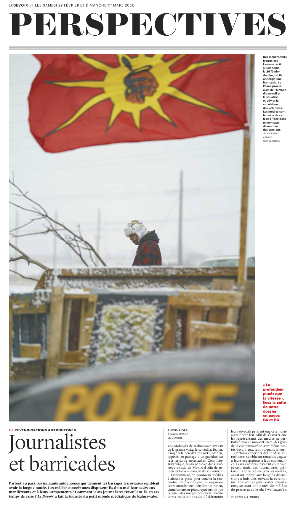
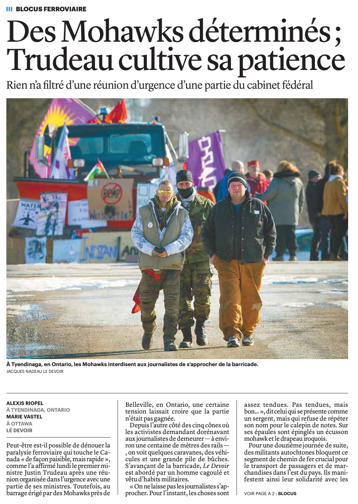
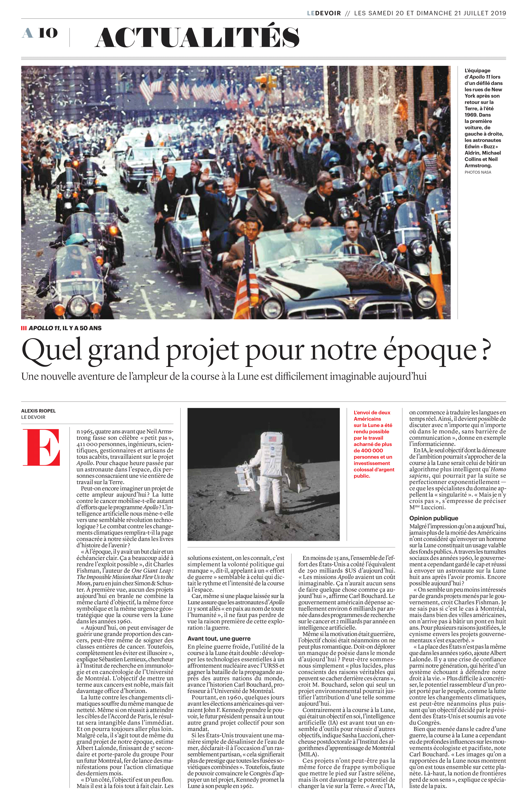
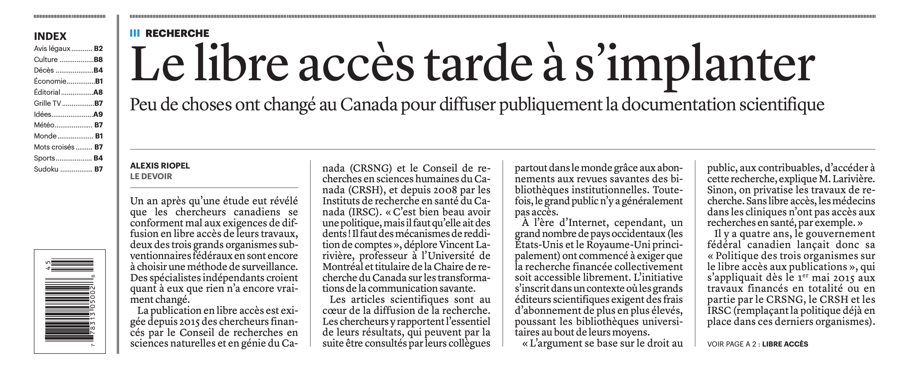
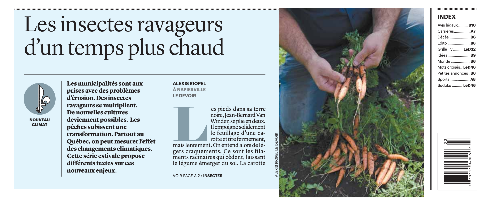
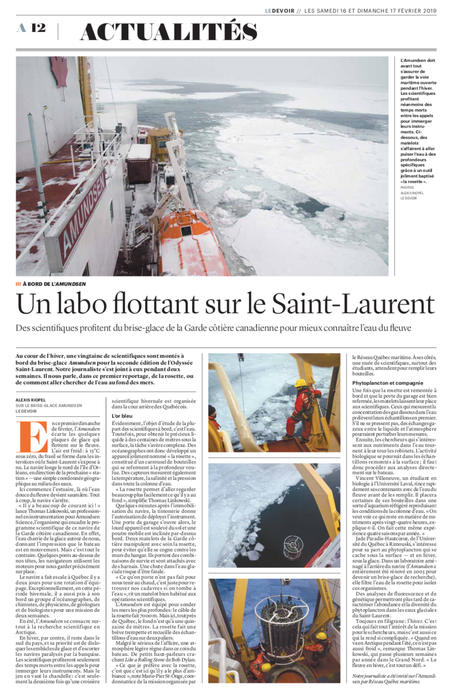
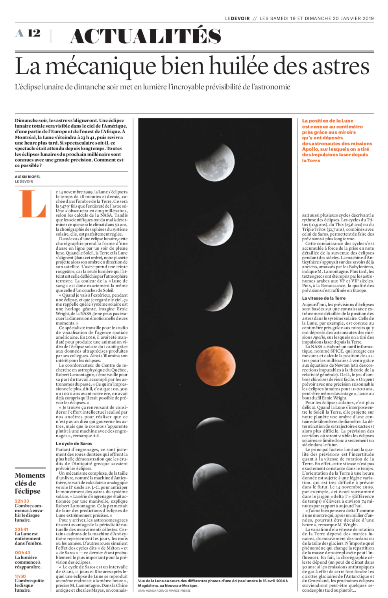
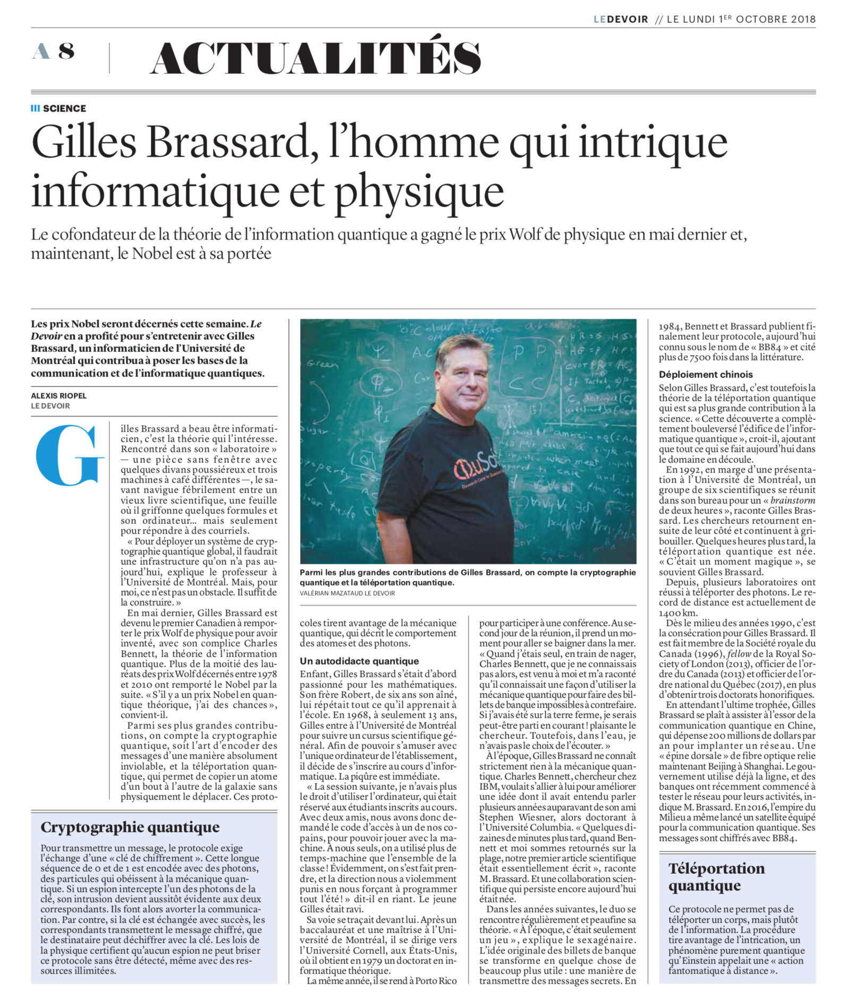
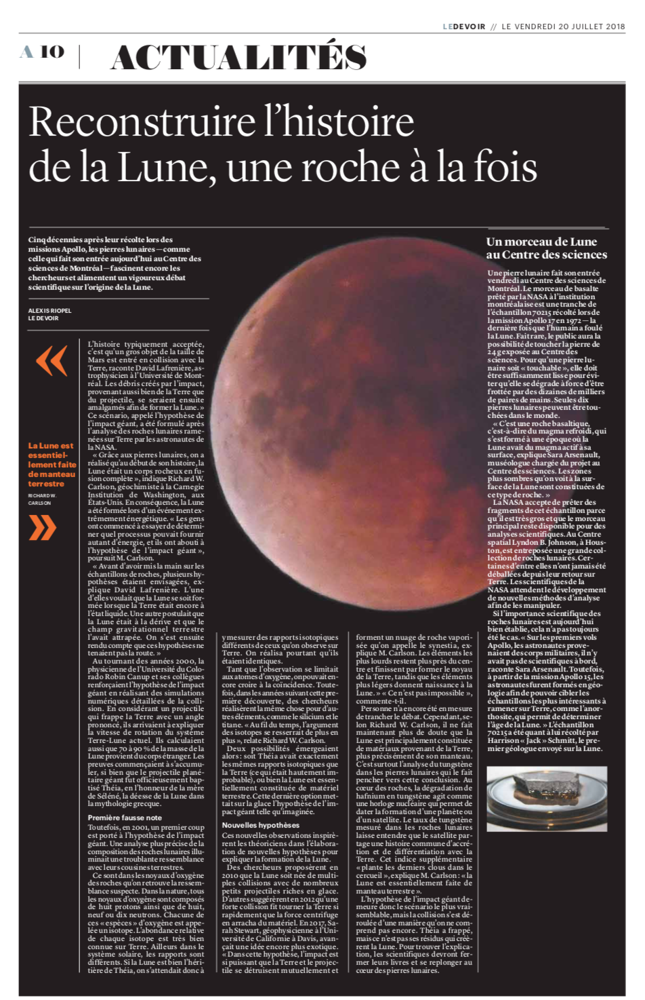

Alexis Riopel
riopelalexis [arobas] gmail.com
Mémoire de maîtrise
Curriculum vitæ
Portfolio
Le Devoir
Québec Science
Le Monde
La Presse
Radio-Canada
Autres
Photos
Portraits
Pérou, Bolivie et Chili
Nouvelle-Zélande
Odyssée Saint-Laurent

Le Devoir — 29 février 2020

Le Devoir — 18 février 2020

Le Devoir — 20 juillet 2019

Le Devoir — 4 novembre 2019

Le Devoir — 17 août 2019

Série pour Le Devoir —
16
,
18
,
19 février 2019

Le Devoir — 19 janvier 2019

Le Devoir — 1er octobre 2018

Le Devoir — 16 juillet 2018